Tamaño del corpus por sección y año
Crecimiento +83% en media (+147% en mediana) en la sección de sostenibilidad (11.2k → 20.5k tokens de media, 6.9k → 17.0k mediana, 2022→2024) — señal RQ4 (NFRD→CSRD). El management report (`mr`) se mantiene estable (~38-41k tokens).
| seccion | año | n | media | mediana | p25 | p75 | max | min |
|---|---|---|---|---|---|---|---|---|
| mr | 2022 | 194 | 38,309 | 29,822 | 19,886 | 47,042 | 209631 | 372 |
| mr | 2023 | 196 | 40,617 | 33,939 | 21,551 | 55,105 | 220334 | 1131 |
| mr | 2024 | 196 | 39,736 | 31,216 | 20,187 | 50,057 | 172138 | 793 |
| sus | 2022 | 194 | 11,208 | 6,894 | 2,657 | 12,922 | 105910 | 169 |
| sus | 2023 | 196 | 13,201 | 9,513 | 3,381 | 16,425 | 108622 | 182 |
| sus | 2024 | 196 | 20,477 | 17,041 | 5,999 | 30,266 | 87977 | 213 |
Cobertura ESRS (diccionario v1.1, 11 categorías)
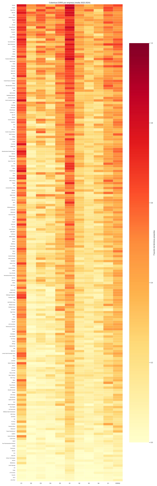
Evolución de la cobertura ESRS por año
E1 (cambio climático) y S1 (plantilla propia) son las categorías mejor cubiertas en todos los años; E2 (contaminación) la peor.
Composición de la muestra (586 documentos `sus`)
Léxico distintivo (TF-IDF)
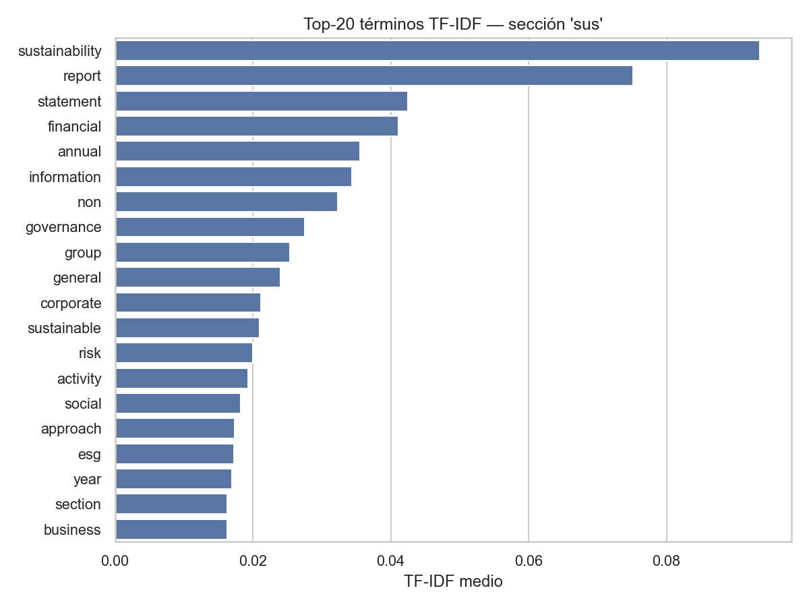
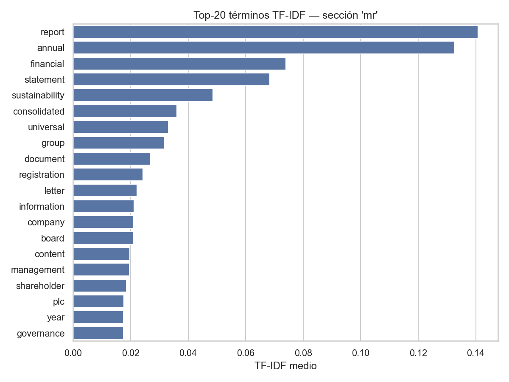
Distribución de tokens
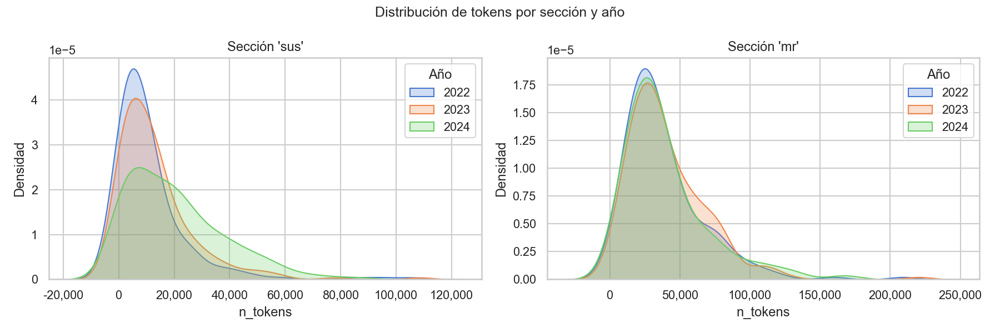
—
Evolución temporal (2022-2024)
Cobertura ESRS por año
Tópicos BERTopic dominantes (sección sostenibilidad)
Datos financieros
LDA entrenado sobre 245.400 párrafos de la sección de sostenibilidad (196 empresas). K óptimo = 25 por coherencia Cv = 0.706 (Decisión 022/036).
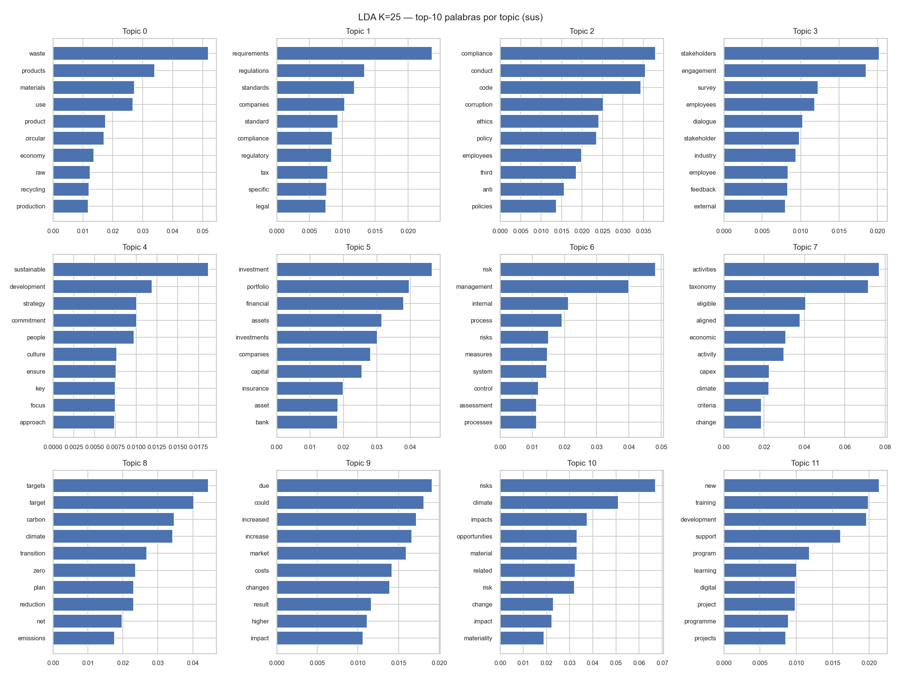
Tópicos interpretados
| topic_id | palabras |
|---|---|
| T00 | waste, products, materials, use, product, circular, economy, raw, recycling, production, hazardous, used, packaging, life, resource |
| T01 | requirements, regulations, standards, companies, standard, compliance, regulatory, tax, specific, legal, must, applicable, iso, required, certification |
| T02 | compliance, conduct, code, corruption, ethics, policy, employees, third, anti, policies, integrity, party, bribery, parties, concerns |
| T03 | stakeholders, engagement, survey, employees, dialogue, stakeholder, industry, employee, feedback, external, groups, local, various, meetings, works |
| T04 | sustainable, development, strategy, commitment, people, culture, ensure, key, focus, approach, environment, value, customers, long, ensuring |
| T05 | investment, portfolio, financial, assets, investments, companies, capital, insurance, asset, bank, financing, finance, property, market, credit |
| T06 | risk, management, internal, process, risks, measures, system, control, assessment, processes, monitoring, ensure, actions, compliance, level |
| T07 | activities, taxonomy, eligible, aligned, economic, activity, capex, climate, criteria, change, opex, sustainable, turnover, proportion, regulation |
| T08 | targets, target, carbon, climate, transition, zero, plan, reduction, net, emissions, set, change, achieve, progress, reduce |
| T09 | due, could, increased, increase, market, costs, changes, result, higher, impact, significant, demand, risk, growth, events |
| T10 | risks, climate, impacts, opportunities, material, related, risk, change, impact, materiality, assessment, analysis, term, identified, potential |
| T11 | new, training, development, support, program, learning, digital, project, programme, projects, innovation, initiatives, skills, technology, people |
| T12 | sustainability, performance, esg, strategy, environmental, governance, management, key, strategic, social, responsible, corporate, targets, assurance, objectives |
| T13 | water, sites, production, air, site, consumption, pollution, wastewater, stress, facilities, treatment, substances, high, resources, quality |
| T14 | employees, health, safety, employee, work, diversity, workforce, women, gender, inclusion, training, working, hours, management, occupational |
| T15 | board, committee, executive, directors, management, members, remuneration, supervisory, governance, audit, officer, corporate, chief, ceo, meeting |
| T16 | energy, consumption, hydro, renewable, electricity, efficiency, gas, sources, vehicles, power, construction, production, fossil, estate, fuel |
| T17 | data, services, customers, customer, security, service, products, protection, end, users, privacy, consumers, digital, product, quality |
| T18 | reporting, esrs, financial, gri, sustainability, statements, disclosure, consolidated, chapter, disclosures, reference, refer, regulation, indicator, related |
| T19 | million, share, net, revenue, income, per, december, financial, shares, cash, period, operating, average, term, rate |
| T20 | years, france, first, europe, two, spain, germany, countries, one, three, brazil, region, since, around, america |
| T21 | biodiversity, environmental, impact, impacts, areas, communities, local, negative, nature, activities, operations, natural, ecosystems, environment, affected |
| T22 | emissions, scope, ghg, data, emission, gas, greenhouse, carbon, category, factors, per, reduction, tco, intensity, used |
| T23 | human, rights, labour, principles, workers, labor, due, social, diligence, policy, collective, international, global, child, conditions |
| T24 | chain, suppliers, value, supply, supplier, procurement, prime, upstream, score, purchasing, sourcing, chains, partners, operations, high |
BERTopic sobre los mismos 245.400 párrafos. 578 tópicos + outliers (40.2%). Triangulación con LDA confirmada (Dec.022/036).
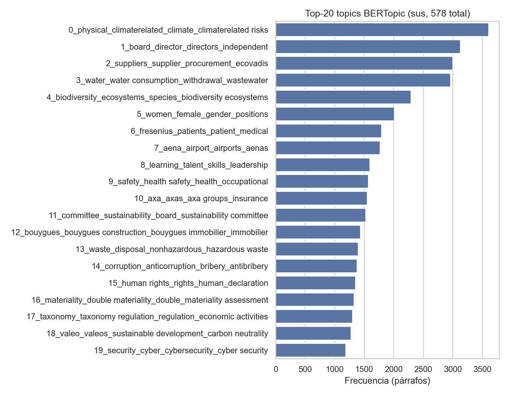
Evolución temporal de tópicos seleccionados
Hallazgo RQ4: T16 "doble materialidad/IROs" crece ×9.3 (107→1001 párrafos, 2022→2024); T17 "Taxonomía UE" ×1.7; T4 "biodiversidad" ×3.3; T3 "agua" ×2.3; T0 "riesgo climático físico" ×2.0.
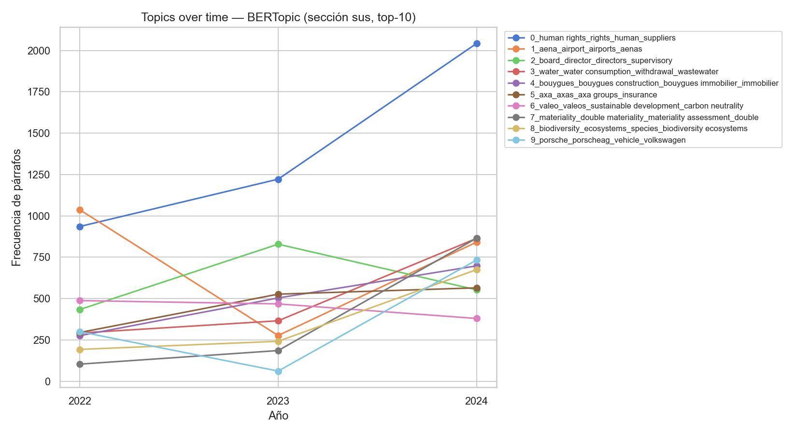
Empresas a comparar (selecciona al menos 2)
Métricas clave
Perfil normalizado (radar, z-score sobre el panel completo de 586 docs)
Tabla comparativa
Análisis estadístico inferencial — Fase 5E (Decisión 026/036). Panel de 586 documentos `sus` (196 empresas).
RQ1 — ¿Qué temas predominan en el reporting de sostenibilidad?
- LDA (K=25, Cv=0.706): 25 tópicos interpretables, mapeados a categorías ESRS en 7 bloques (E1, E2-E4, E5, S1, S2-S3, G1, + tópicos genéricos CSRD).
- BERTopic: 578 tópicos + 40.2% outliers. Triangulación con LDA confirmada — los temas dominantes coinciden entre ambos modelos.
- Los temas más frecuentes giran en torno a emisiones/riesgo climático (E1), plantilla propia (S1) y, de forma creciente, doble materialidad / IROs (CSRD).
RQ2 — ¿Hay diferencias de contenido y tono por sector y país?
Test de Kruskal-Wallis sobre GW_index, tono FinBERT y especificidad climática, agrupando por supersector ICB y por región/país.
Por supersector
| variable | n_grupos | n_obs | H | p_valor | eta2 |
|---|---|---|---|---|---|
| GW_index | 11 | 577 | 57.39 | 1.127e-08 | 0.09963 |
| finbert_tone | 11 | 586 | 36.45 | 7.048e-05 | 0.0623 |
| climate_specificity_spec | 11 | 577 | 66.29 | 2.291e-10 | 0.1151 |
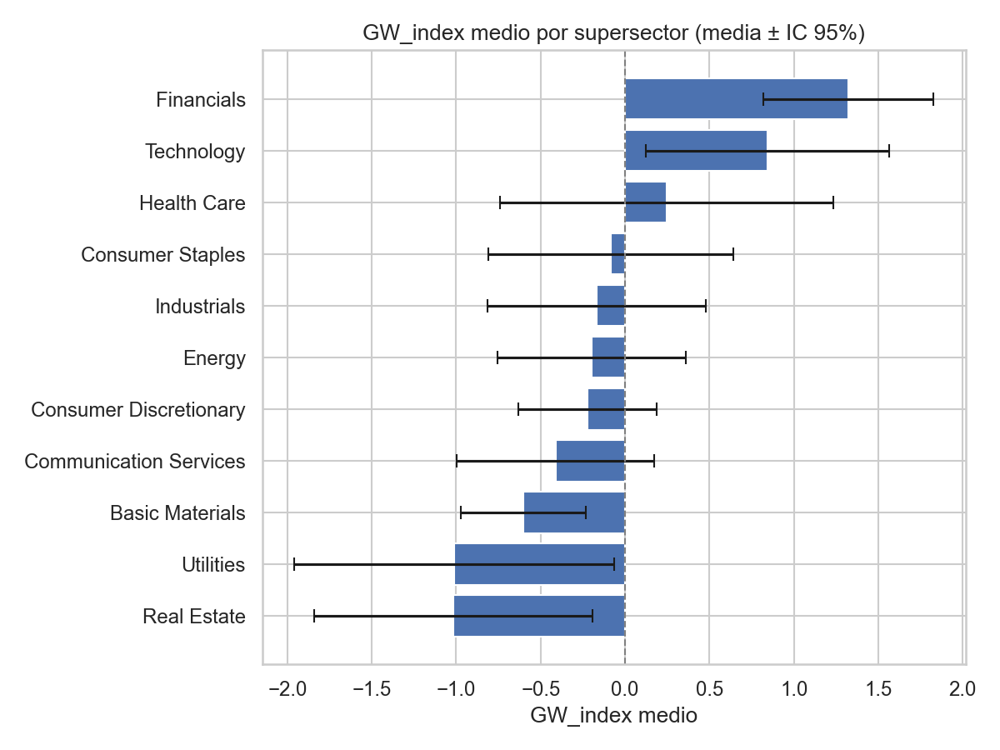
Por país
| variable | n_grupos | n_obs | H | p_valor | eta2 |
|---|---|---|---|---|---|
| GW_index | 17 | 577 | 85.26 | 1.853e-11 | 0.148 |
| finbert_tone | 17 | 586 | 62.13 | 2.28e-07 | 0.1062 |
| climate_specificity_spec | 17 | 577 | 44.51 | 0.000165 | 0.07727 |
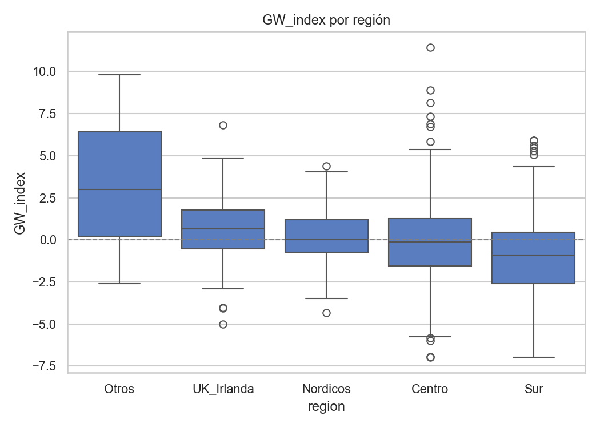
- GW_index y especificidad difieren significativamente por sector y región (p < 0.001 en general).
- Tech y Financials muestran mayor GW_index; Real Estate mayor especificidad.
- La región Centro (Europa continental) presenta menor GW_index que Nórdicos y UK.
RQ3 — Determinantes de especificidad/cobertura y relación tono-especificidad
Dos regresiones OLS con errores robustos HC3 (n=577, R² ≈ 0.14-0.16, VIF máx ≈ 2.7-3 — sin problemas de multicolinealidad relevantes).
Modelo 1 — GW_index ~ sector + región + año + tamaño + financieros
| término | Coef. | Std.Err. | z | P>|z| | [0.025 | 0.975] |
|---|---|---|---|---|---|---|
| Intercept | -0.4011 | 1.7 | -0.236 | 0.8135 | -3.733 | 2.93 |
| C(supersector)[T.Communication Services] | 0.153 | 0.3409 | 0.4489 | 0.6535 | -0.5151 | 0.8211 |
| C(supersector)[T.Consumer Discretionary] | 0.4685 | 0.2913 | 1.608 | 0.1078 | -0.1025 | 1.039 |
| C(supersector)[T.Consumer Staples] | 0.5825 | 0.4234 | 1.376 | 0.1689 | -0.2474 | 1.412 |
| C(supersector)[T.Energy] | 0.4431 | 0.3504 | 1.265 | 0.2059 | -0.2436 | 1.13 |
| C(supersector)[T.Financials] | 2.034 | 0.3453 | 5.891 | 3.849e-09 | 1.357 | 2.711 |
| C(supersector)[T.Health Care] | 0.5192 | 0.4514 | 1.15 | 0.25 | -0.3655 | 1.404 |
| C(supersector)[T.Industrials] | 0.489 | 0.3908 | 1.251 | 0.2109 | -0.277 | 1.255 |
| C(supersector)[T.Real Estate] | -0.3315 | 0.4494 | -0.7377 | 0.4607 | -1.212 | 0.5494 |
| C(supersector)[T.Technology] | 1.338 | 0.4373 | 3.059 | 0.002219 | 0.4807 | 2.195 |
| C(supersector)[T.Utilities] | -0.06971 | 0.5682 | -0.1227 | 0.9024 | -1.183 | 1.044 |
| C(año)[T.2023] | -0.009711 | 0.2503 | -0.0388 | 0.969 | -0.5002 | 0.4808 |
| C(año)[T.2024] | 0.5096 | 0.2348 | 2.17 | 0.03 | 0.04933 | 0.9698 |
| C(region)[T.Nordicos] | 0.6123 | 0.268 | 2.284 | 0.02235 | 0.08694 | 1.138 |
| C(region)[T.Otros] | 3.767 | 4.276 | 0.8809 | 0.3784 | -4.615 | 12.15 |
| C(region)[T.Sur] | -0.5052 | 0.3511 | -1.439 | 0.1501 | -1.193 | 0.1829 |
| C(region)[T.UK_Irlanda] | 0.7509 | 0.2514 | 2.987 | 0.002821 | 0.2581 | 1.244 |
| log_cap | -0.02625 | 0.07411 | -0.3542 | 0.7232 | -0.1715 | 0.119 |
| ROA | 1.445 | 1.109 | 1.303 | 0.1924 | -0.728 | 3.618 |
| deuda_equity | 0.01637 | 0.04844 | 0.338 | 0.7353 | -0.07857 | 0.1113 |
VIF — Modelo 1
| variable | VIF |
|---|---|
| C(supersector)[T.Communication Services] | 1.821 |
| C(supersector)[T.Consumer Discretionary] | 2.672 |
| C(supersector)[T.Consumer Staples] | 1.790 |
| C(supersector)[T.Energy] | 1.553 |
| C(supersector)[T.Financials] | 2.607 |
| C(supersector)[T.Health Care] | 1.670 |
| C(supersector)[T.Industrials] | 1.971 |
| C(supersector)[T.Real Estate] | 1.519 |
| C(supersector)[T.Technology] | 1.546 |
| C(supersector)[T.Utilities] | 1.701 |
| C(año)[T.2023] | 1.367 |
| C(año)[T.2024] | 1.363 |
| C(region)[T.Nordicos] | 1.428 |
| C(region)[T.Otros] | 1.116 |
| C(region)[T.Sur] | 1.286 |
| C(region)[T.UK_Irlanda] | 1.170 |
| log_cap | 1.343 |
| ROA | 1.122 |
| deuda_equity | 1.063 |
Modelo 2 — Tono FinBERT ~ especificidad + sector + región + año + tamaño
| término | Coef. | Std.Err. | z | P>|z| | [0.025 | 0.975] |
|---|---|---|---|---|---|---|
| Intercept | 0.1352 | 0.1161 | 1.165 | 0.2442 | -0.09236 | 0.3628 |
| C(supersector)[T.Communication Services] | -0.04637 | 0.02115 | -2.193 | 0.02834 | -0.08782 | -0.004919 |
| C(supersector)[T.Consumer Discretionary] | -0.001789 | 0.01862 | -0.0961 | 0.9234 | -0.03828 | 0.0347 |
| C(supersector)[T.Consumer Staples] | -0.01058 | 0.02455 | -0.4311 | 0.6664 | -0.05869 | 0.03753 |
| C(supersector)[T.Energy] | -0.0746 | 0.03232 | -2.308 | 0.021 | -0.138 | -0.01125 |
| C(supersector)[T.Financials] | -0.01012 | 0.02057 | -0.4922 | 0.6226 | -0.05043 | 0.03019 |
| C(supersector)[T.Health Care] | 0.0488 | 0.04182 | 1.167 | 0.2433 | -0.03317 | 0.1308 |
| C(supersector)[T.Industrials] | 0.0004619 | 0.0221 | 0.0209 | 0.9833 | -0.04285 | 0.04377 |
| C(supersector)[T.Real Estate] | -0.06919 | 0.01719 | -4.026 | 5.683e-05 | -0.1029 | -0.0355 |
| C(supersector)[T.Technology] | -0.009981 | 0.03625 | -0.2753 | 0.7831 | -0.08103 | 0.06107 |
| C(supersector)[T.Utilities] | -0.04775 | 0.02697 | -1.77 | 0.07667 | -0.1006 | 0.005115 |
| C(año)[T.2023] | -0.005005 | 0.01471 | -0.3403 | 0.7336 | -0.03383 | 0.02382 |
| C(año)[T.2024] | -0.04761 | 0.0138 | -3.449 | 0.0005619 | -0.07467 | -0.02056 |
| C(region)[T.Nordicos] | -0.01061 | 0.01704 | -0.6227 | 0.5335 | -0.04402 | 0.02279 |
| C(region)[T.Otros] | -0.2881 | 0.4246 | -0.6785 | 0.4974 | -1.12 | 0.5442 |
| C(region)[T.Sur] | 0.00886 | 0.0172 | 0.5152 | 0.6064 | -0.02485 | 0.04257 |
| C(region)[T.UK_Irlanda] | 0.06351 | 0.01452 | 4.374 | 1.222e-05 | 0.03505 | 0.09198 |
| climate_specificity_spec | 0.1943 | 0.06449 | 3.014 | 0.002582 | 0.06794 | 0.3207 |
| log_cap | 0.0003778 | 0.004872 | 0.07754 | 0.9382 | -0.009172 | 0.009928 |
| ROA | 0.09965 | 0.1436 | 0.6939 | 0.4878 | -0.1818 | 0.3811 |
VIF — Modelo 2
| variable | VIF |
|---|---|
| C(supersector)[T.Communication Services] | 1.838 |
| C(supersector)[T.Consumer Discretionary] | 2.679 |
| C(supersector)[T.Consumer Staples] | 1.798 |
| C(supersector)[T.Energy] | 1.555 |
| C(supersector)[T.Financials] | 2.720 |
| C(supersector)[T.Health Care] | 1.711 |
| C(supersector)[T.Industrials] | 1.975 |
| C(supersector)[T.Real Estate] | 1.520 |
| C(supersector)[T.Technology] | 1.570 |
| C(supersector)[T.Utilities] | 1.701 |
| C(año)[T.2023] | 1.366 |
| C(año)[T.2024] | 1.368 |
| C(region)[T.Nordicos] | 1.429 |
| C(region)[T.Otros] | 1.116 |
| C(region)[T.Sur] | 1.300 |
| C(region)[T.UK_Irlanda] | 1.170 |
| climate_specificity_spec | 1.134 |
| log_cap | 1.340 |
| ROA | 1.091 |
- Especificidad → tono positivo (p = 0.003): relación positiva, no apoya la hipótesis simple "más optimismo ↔ menos especificidad" — confirmado a 196 empresas.
- El año 2024 es significativo tanto en el modelo de tono (p < 0.001) como ahora en GW_index tras controles (p = 0.030) — con el doble de empresas, el efecto CSRD ya no es meramente compositivo.
- El efecto de tamaño (log-capitalización) sobre GW_index, significativo en la muestra de 97 empresas, no se replica con 196 (p = 0.72).
- Financials (+2.03, p<0.001) y Technology (+1.34, p=0.002) elevan el GW_index frente a Basic Materials; Nórdicos y UK&Irlanda lo elevan frente a Centro.
RQ4 — Evolución NFRD (2022-23) → CSRD (2024)
Test de Wilcoxon pareado 2022 ↔ 2024 (n=194 empresas con ambos años).
| variable | n | media_2022 | media_2024 | diff_media | t | p_ttest | W | p_wilcoxon |
|---|---|---|---|---|---|---|---|---|
| GW_index | 190 | -0.2081 | 0.3393 | 0.5474 | 2.63 | 0.009242 | 6945 | 0.005063 |
| finbert_tone | 194 | 0.1885 | 0.1422 | -0.04626 | -4.012 | 8.61e-05 | 6037 | 1.892e-05 |
| climate_specificity_spec | 190 | 0.263 | 0.2443 | -0.01877 | -1.591 | 0.1132 | 7741 | 0.1264 |
| climate_sentiment_risk | 190 | 0.1106 | 0.1651 | 0.05451 | 5.664 | 5.425e-08 | 3948 | 1.067e-10 |
| climate_sentiment_opportunity | 190 | 0.2069 | 0.1604 | -0.04649 | -3.86 | 0.0001556 | 5584 | 1.003e-05 |
| n_tokens | 194 | 1.121e+04 | 2.06e+04 | 9395 | 6.506 | 6.488e-10 | 3880 | 1.756e-12 |
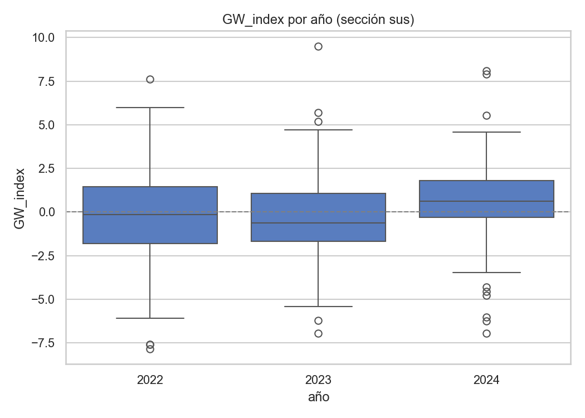
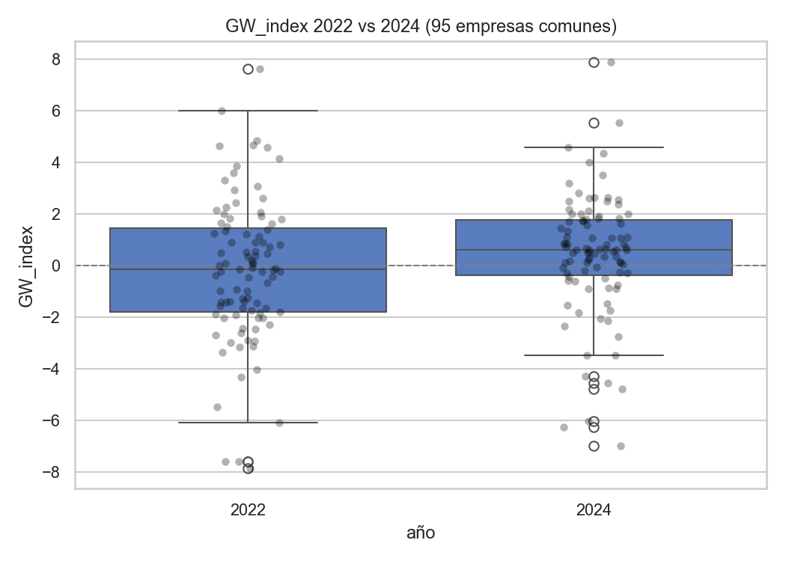
- GW_index ↑ (-0.208 → +0.339, Δ=+0.547, Wilcoxon p=0.0051): hedging↑, especificidad↓, ratio cuantitativo↓.
- Tono FinBERT ↓ (0.189 → 0.142, p<0.0001): comunicación cada vez menos optimista.
- Riesgo climático ↑ (+0.055, p<0.0001), oportunidad climática ↓ (-0.047, p<0.0001).
- n_tokens ↑: las secciones de sostenibilidad crecen +83% en media (11.2k → 20.6k tokens, p<0.0001).
- Especificidad climática sigue sin alcanzar significación (Wilcoxon p = 0.126).
- Promesas vagas (
ratio_futuro_sin_cifra) se mantienen estables.